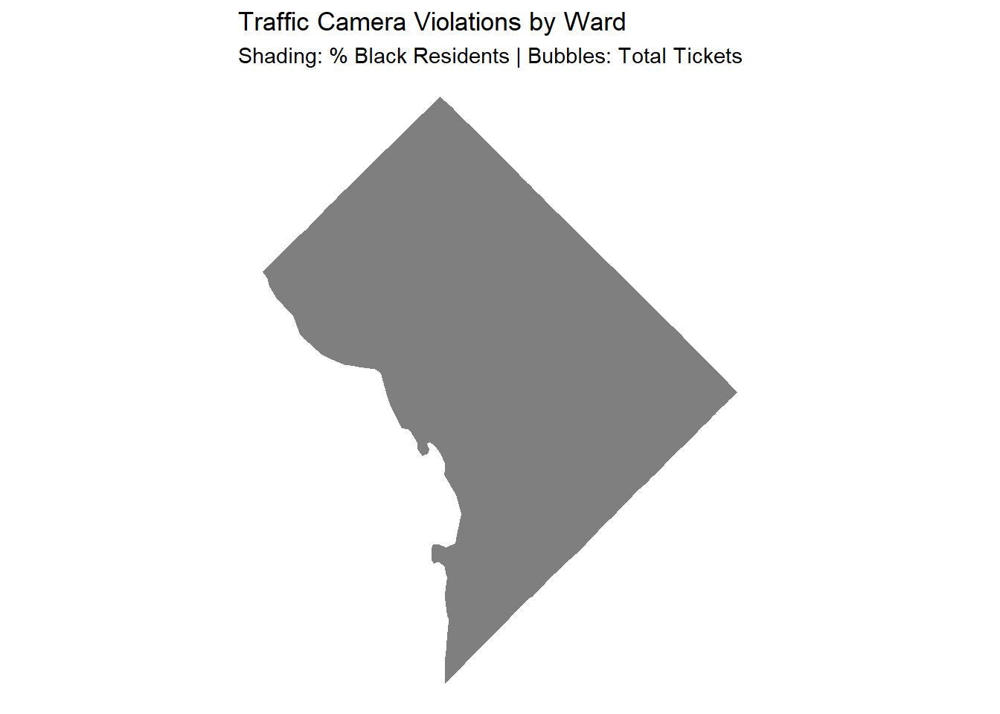

library(tidyverse)
library(janitor)
library(lubridate)
arrests <- read_csv("data/2024_dc_arrests.csv") |> clean_names()
demographics <- read_csv("data/ACS_5-Year_Demographic_Characteristics_DC_Ward.csv") |> clean_names()
social <- read_csv("data/ACS_5-Year_Social_Characteristics_DC_Ward.csv") |> clean_names()
camera_locs <- read_csv("data/Automated_Traffic_Enforcement.csv") |> clean_names()
camera_violations <- read_csv("data/Automated_Safety_Cameras_Violation_Count_By_Month.csv") |> clean_names()
# racial distribution
ward_pop <- demographics |>
mutate(ward_num = str_extract(namelsad, "\\d")) |>
select(ward_num,
total_pop = dp05_0001e,
black_pop = dp05_0038e,
white_pop = dp05_0037e)
#education
ward_social <- social |>
mutate(ward_num = str_extract(namelsad, "\\d")) |>
select(ward_num,
total_households = dp02_0001e,
pop_25_plus = dp02_0067e,
bachelors_plus = dp02_0068e)
# creating a table for each ward with total arrests and numbers for each racein this one I have to map areests psa to wards so it can match each ward in the district
ward_arrest_stats <- arrests |>
mutate(psa = as.character(offense_location_psa)) |>
mutate(ward_num = case_when(
psa %in% c("301", "302", "303", "304", "305", "408") ~ "1",
psa %in% c("101", "102", "207", "208", "209", "306", "307") ~ "2",
psa %in% c("201", "202", "203", "204", "205", "206") ~ "3",
psa %in% c("401", "402", "403", "404", "405", "406", "407", "409") ~ "4",
psa %in% c("501", "502", "503", "504", "505", "506", "507") ~ "5",
psa %in% c("103", "104", "105", "106", "107", "108") ~ "6",
psa %in% c("601", "602", "603", "604", "605", "606", "607", "608") ~ "7",
psa %in% c("701", "702", "703", "704", "705", "706", "707", "708") ~ "8",
TRUE ~ NA_character_
)) |>
group_by(ward_num) |>
summarise(
total_arrests = n(),
black_arrests = sum(defendant_race == "BLACK", na.rm = TRUE),
white_arrests = sum(defendant_race == "WHITE", na.rm = TRUE),
total_traffic_arrests = sum(arrest_category %in% c("Traffic Violations", "Driving/Boating While Intoxicated"), na.rm = TRUE),
black_traffic_arrests = sum(arrest_category %in% c("Traffic Violations", "Driving/Boating While Intoxicated") & defendant_race == "BLACK", na.rm = TRUE),
white_traffic_arrests = sum(arrest_category %in% c("Traffic Violations", "Driving/Boating While Intoxicated") & defendant_race == "WHITE", na.rm = TRUE)
)
#Traffic cameras violations
total_violations <- camera_violations |>
group_by(enforcement_space_code) |>
summarise(total_violations = sum(num_violations, na.rm = TRUE))
#Traffic cameras by ward
ward_camera_stats <- camera_locs |>
mutate(ward_num = as.character(as.integer(ward))) |>
left_join(total_violations, by = "enforcement_space_code") |>
group_by(ward_num) |>
summarise(
camera_count = n(),
speed_camera_count = sum(enforcement_type == "Speed", na.rm = TRUE),
total_camera_violations = sum(total_violations, na.rm = TRUE)
) |>
filter(ward_num != "0")
#now I will join the data and calculate the per capita rates
joined_df <- ward_arrest_stats |>
drop_na(ward_num) |>
inner_join(ward_pop, by = "ward_num") |>
left_join(ward_camera_stats, by = "ward_num") |>
mutate(
# Arrests per 1,000 residents of each race (per capita)
black_per_capita = (black_arrests / black_pop) * 1000,
white_per_capita = (white_arrests / white_pop) * 1000,
#Cameras per 10,000 residents
cameras_per_10k = (camera_count / total_pop) * 10000,
# Percentages for dataviz
pct_black_pop = (black_pop / total_pop) * 100,
pct_white_pop = (white_pop / total_pop) * 100,
pct_black_arrests = (black_arrests / total_arrests) * 100,
pct_white_arrests = (white_arrests / total_arrests) * 100,
pct_black_traffic_arrests = (black_traffic_arrests / total_traffic_arrests) * 100,
pct_white_traffic_arrests = (white_traffic_arrests / total_traffic_arrests) * 100
)draft
How many times a black resident is likely to be arrested compered to a white resident? in each ward
joined_df |>
mutate(disparity_ratio = black_per_capita / white_per_capita) |>
select(ward_num, black_per_capita, white_per_capita, disparity_ratio) |>
arrange(desc(disparity_ratio))# A tibble: 8 × 4
ward_num black_per_capita white_per_capita disparity_ratio
<chr> <dbl> <dbl> <dbl>
1 2 222. 7.79 28.5
2 6 72.2 2.77 26.0
3 3 57.1 3.25 17.6
4 1 108. 13.0 8.32
5 8 53.2 11.3 4.71
6 5 47.8 11.7 4.10
7 7 48.7 17.2 2.84
8 4 31.6 16.0 1.98Data viz for resident share vs. arrest share by ward

What are the wards with majority black population?
joined_df |>
filter(ward_num %in% c("7", "8")) |>
select(ward_num, pct_black_pop, total_arrests, camera_count)# A tibble: 2 × 4
ward_num pct_black_pop total_arrests camera_count
<chr> <dbl> <int> <int>
1 7 82.3 3943 69
2 8 82.5 3972 42what is the distribution of traffic cameras in each ward?
ward_camera_stats |>
select(ward_num, camera_count, total_camera_violations) |>
arrange(desc(camera_count))# A tibble: 8 × 3
ward_num camera_count total_camera_violations
<chr> <int> <dbl>
1 5 69 2129270
2 7 69 1735294
3 8 42 1003144
4 2 34 1118075
5 4 34 658257
6 3 30 705934
7 1 20 204128
8 6 20 717051Traffic arrests by race for each ward
joined_df |>
select(ward_num,
total_traffic_arrests,
pct_black_traffic_arrests, pct_black_pop,
pct_white_traffic_arrests, pct_white_pop) |>
arrange(desc(pct_black_traffic_arrests))# A tibble: 8 × 6
ward_num total_traffic_arrests pct_black_traffic_arrests pct_black_pop
<chr> <int> <dbl> <dbl>
1 8 629 92.5 82.5
2 7 1347 84.3 82.3
3 6 245 73.5 23.9
4 5 540 65 58.0
5 2 327 53.2 10.4
6 4 390 50 46.9
7 1 302 43.0 22.5
8 3 94 27.7 8.93
# ℹ 2 more variables: pct_white_traffic_arrests <dbl>, pct_white_pop <dbl>are there ore traffic cameras in black majority neighborhoods?

library(sf)
library(tigris)
# 1. Get the map and suppress the 'longitude' warning by transforming it
dc_map_simple <- county_subdivisions(state = "DC", cb = TRUE, class = "sf") |>
clean_names() |>
mutate(ward_num = as.character(str_extract(name, "\\d"))) |>
st_transform(26985) # Projects it to the DC-specific flat coordinate system
|
| | 0%
|
|======================================================================| 100%# 2. Join your data
map_data_final <- dc_map_simple |>
left_join(joined_df, by = "ward_num")
# 3. Use 'stat_sf_coordinates' but with the projected data to stop the error
ggplot(map_data_final) +
# The Ward boundaries
geom_sf(aes(fill = pct_black_pop), color = "white", size = 0.3) +
# The Bubble Overlay
stat_sf_coordinates(aes(size = total_camera_violations),
color = "orange", alpha = 0.6) +
# Formatting
scale_fill_gradient(low = "#deebf7", high = "#08306b", name = "% Black Pop") +
scale_size_continuous(name = "Tickets", labels = scales::comma) +
theme_void() +
labs(title = "Traffic Camera Violations by Ward",
subtitle = "Shading: % Black Residents | Bubbles: Total Tickets")